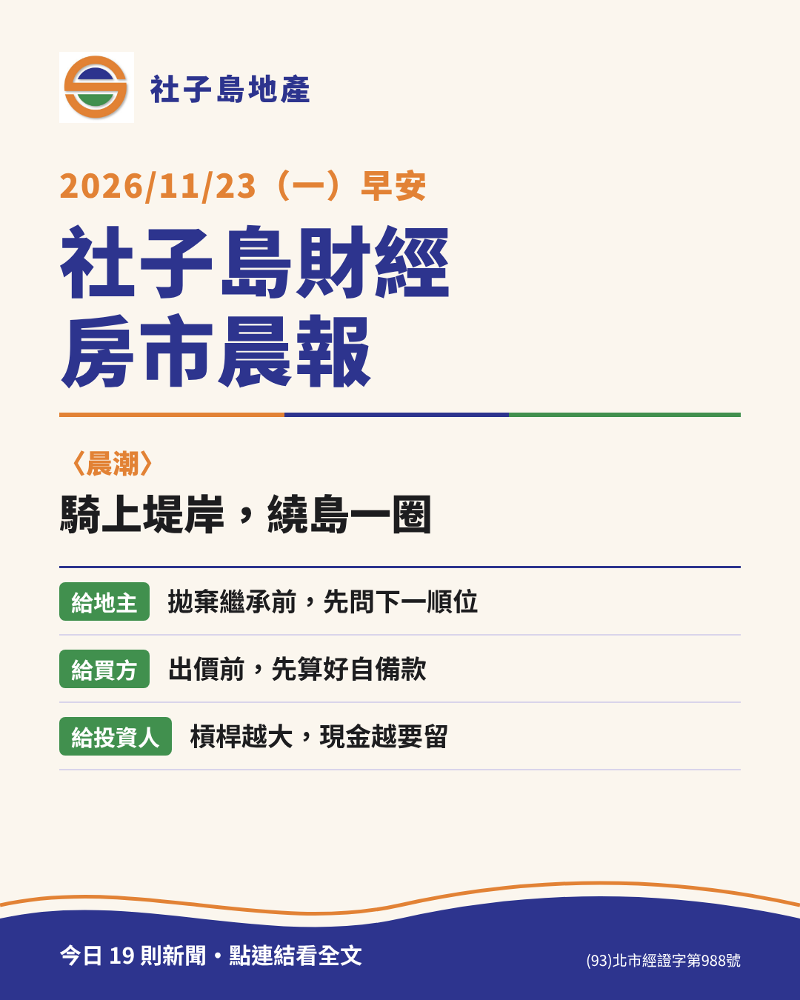

2026/11/23 (一) 早安
社子島財經房市晨報｜騎上堤岸，繞島一圈
北市列管的都更案已經超過一千件，第一線審查人力卻只有三十多人；今天的〈今日一題〉，用三分鐘說清楚台北都更為什麼這麼慢，社子島走的又是哪一條路。自由財經這週末連登三篇「房市緩著陸」，我們把關鍵數字整理在〈數字看房市〉。昨晚北士科工地頂樓火警，十一點前撲滅、沒有人受傷。週一早上，26 則新聞，點標題就能讀原文。
〈潮汐表〉今天的三道潮水
- 給地主想把遺產留給另一半，別急著全家拋棄繼承；先問清楚下一順位會不會變成孫子女。
- 給買方房市降溫，買方比較有議價空間；出價前，先把自備款和貸款成數算清楚。
- 給投資人自備兩成買房，等於五倍槓桿；股市大跌的時候，更要把現金留足。
〈晨潮〉堤上散步
騎上堤岸，繞島一圈
昨天在堤防上，阿公摸著孫子的腳踏車問我們：「這馬堤岸頂有自行車道矣。對佗位起騎？繞一輾愛偌久？阮這个年歲，騎會了無？」阿公，這三個問題，我們今天一個一個回答。
先說多遠。臺北市水利處把這條路叫做「社子島環島與二重疏洪道自行車道」，社子島這一段約 9 公里，騎一圈大約 40 分鐘。它沿著島外圍的堤防走，一邊是淡水河，一邊是基隆河，騎到島頭，兩條河就在眼前會合。網路上也有人寫 15 公里、24 公里，那多半是從捷運站騎過來，或把對岸二重疏洪道那一圈也算進去了。
再說從哪裡起騎。住在島上的鄰居最方便，從家附近的堤防出入口推車上去，往左往右都能繞回原點。從島外來的朋友，有遊記寫到在捷運唭哩岸站附近借 YouBike，經社子大橋的自行車牽引道進島。借車、還車的站點會變動，出門前請先用 YouBike App 查一下。
繞島一圈，三件事先知道
- 多遠｜社子島段約 9 公里，騎一圈約 40 分鐘（臺北市水利處介紹）
- 起點｜島上鄰居就近上堤；島外朋友可經社子大橋自行車牽引道進島
- 量力｜分段騎、隨時停，風大穿外套，借還車先查 YouBike App
最後，阿公騎得完嗎？我們的建議是：不用一次騎完。9 公里分成幾段，騎到福安碼頭停下來看看河，騎到島頭公園坐一下，喝口水再走。冬天河邊的風比街上大，記得穿外套、戴帽子；今天白天放晴，晚上起鋒面接近，想去就趁早上到午後，騎累了就改用走的，一樣是繞島。
阿公年輕時騎的是土路，下雨一身泥；現在是平整的堤頂路。這圈堤防，守了社子島幾十年。未來的開發計畫裡，堤防和河岸會變成什麼樣子，我們會繼續陪您一段一段看。往下滑，是今天的新聞；最後在〈廟口泡茶區〉，阿公在等您。
——社子島地產團隊
〈今日一題〉
台北都更為什麼這麼慢？社子島走的是哪一條路？
先看數字。國土管理署統計，到今年 9 月底，臺北市列管的都更案有 1,184 件；專家在座談會上說，北市第一線的審查人力只有三十多人。國土管理署另一份統計顯示，北市近年每年核定的都更案大約三、四十件。
慢在哪裡？一是住戶要一戶一戶談到同意；二是審議排隊；三是不少老房子連「合法房屋」都證明不了，北市議員點名，六十年以上的老建築有上萬棟卡在這一關。
社子島不一樣。社子島走的是「區段徵收」：政府把整片土地一起徵收、一起開發，地主可以選擇領回抵價地或領現金補償，不必一棟一棟整合同意。它要等的，是內政部審議和市府的開發時程。
如果您手上是台北的老公寓，第一步可以先確認房子有沒有使用執照或合法房屋證明；如果您是社子島的地主，就把權狀、持分整理好，跟著審議進度一步一步走。
資料：國土管理署統計（富比士地產王、聯合新聞網引述）、自由時報地產天下 11/22 報導、北市議會質詢報導；區段徵收說明依土地徵收條例。數字為各報導發布時的統計。
〈數字看房市：房市緩著陸，三個數字〉
- 5 季全國大廈新案平均單價，連續 5 季比去年同期低（2025 年第三季起）
- 896 戶今年第三季全國新建案 30 天銷售戶數；信用管制前最熱的 2024 年第二季是 6,114 戶
- 7 季全國新建案 30 天銷售戶數，已連續 7 季不到 1,500 戶
白話說：價格跌得少，成交量縮得多。買的人變少了，但多數建商和屋主還沒有大幅讓價。這是我們的解讀，數字取自自由財經「房市緩著陸」系列引述的國泰房地產指數與住宅價格統計。
主商圈：社子島・北士科・關渡洲美平原3 則
昨晚北士科一處建案工地頂樓火警，火勢在晚間撲滅、無人傷亡，起火原因調查中；北市豪宅交易，士林、北投的占比在上升；關渡人文藝術週 12 月 19 日開幕。社子島區段徵收計畫仍在內政部審議，本週末沒有新的官方進度
大台北：台北市・新北市・基隆6 則
今天大台北的主題是都更：北市逾千件待審、大直兩件公辦都更招商成功、信義區老社區由富邦接手改建 37 層；民生東路一段都更案最後一戶談不攏，市府說明已依法代拆。房價面，新青安寬限期陸續到期，雙北會不會出現拋售，專家看法分歧
其他縣市：台中・台南・高雄（離台北由近到遠）3 則
台中捷運市政府站聯開案動土；中南部房市分化，高雄成交量增、台南價格修正；高雄車站周邊商辦開賣
稅務與法律實務3 則
換屋想申請重購退稅，土地增值稅比的是土地的申報移轉現值，不是房屋總價；子女全部拋棄繼承，遺產不一定就歸媽媽；一份 1952 年的鬮書，七十多年後還在打土地官司
全台房市・政策・社宅6 則
自由財經三篇「房市緩著陸」系列，一次看懂新案價格、總價帶和信用管制；房貸利率居高、銀行喊缺錢，專家有不同看法；內政部說選後要和地方討論調整租金補貼、檢討容積獎勵；中央社宅最後一波招租首次「先抽後審」
交通建設與生活1 則
今天白天晴朗回暖，晚上起鋒面接近、北部轉濕涼；騎車上堤的朋友，下午就回家
今日財經大事4 則
今天起所有上市櫃股票禁止平盤以下放空；行政院長今天邀金融、科技、工商界代表座談；國發會本週公布 10 月景氣燈號，有機會挑戰史上最長的連續紅燈
〈阿公講古〉
週一早上，太陽從觀音山的另一邊照過來，淡水河面亮亮的。阿公站在河邊，看孫子騎著腳踏車在堤上來回。
「好啦好啦，9 公里，阮分三擺騎。」阿公笑著說，「騎到碼頭歇一下，騎到島頭閣歇一下，按呢就袂輸少年人。」
說著，一群鳥從河面低低飛過，停在對岸的泥灘上，一隻一隻把頭埋進水裡。
阿公瞇著眼看了很久：「阮細漢，逐年天若冷，河邊仔就有規陣的鳥仔飛來。人講是對北爿真遠的所在飛來的。」
他轉過頭問：「這些鳥仔，到底是對佗位來的？啥物時陣來、啥物時陣走？咱社子島，佗位看會著？」
阿公的問題，我們明天回答。
〈廟口泡茶區〉
阿公從淡水河邊走回來，廟口榕樹下的茶剛好泡開。繞島要分段騎，買賣一塊地也一樣，一步一步來。
想賣一塊地，第一步不是開價，而是把權狀、持分、分區弄清楚；這一段，我們陪您一起整理。
也想問問您：繞島一圈，您最喜歡在哪一段停下來？打個電話告訴我們，說不定就寫進晨報。
不急著成交。我們是守在堤邊的人，守著每一塊土地的權益，直到把它交到願意耕耘它的人手上。
📞 歡迎先來電 0922-252-969先通個電話聊聊，再約時間來廟口喝茶。
 掃描 QR code，加 LINE 好友LINE ID：@shezidao💬 加 LINE
掃描 QR code，加 LINE 好友LINE ID：@shezidao💬 加 LINE
社子島地產團隊｜service@shezidao.com.tw
台北市士林區延平北路九段288號
週一至週六 9:30–18:00（週四 9:30–13:30），週日公休📞 來電 0922-252-969
本站由社子島地產開發有限公司經營，為民間不動產資訊網站，非臺北市政府官方網站；政府公告請以臺北市政府與地政局網站為準。
本期新聞由社子島地產團隊自中央社、中時新聞網、Yahoo奇摩新聞、自由時報、自由時報地產天下、自由財經、udn房地產、聯合新聞網、經濟日報、ETtoday房產雲、蕃新聞、壹蘋新聞網、三立新聞網、NOWnews今日新聞、鏡週刊 等來源收集，標題照原文，點擊即可開啟原始報導；新聞依「主商圈 → 大台北 → 其他縣市（離台北由近到遠）→ 稅務與法律實務 → 全國主題」排列，當天沒有新報導的分類不列出。〈晨潮〉自行車道長度與騎乘時間依臺北市政府工務局水利工程處「社子島環島與二重疏洪道自行車道」介紹（搜尋摘要，雲端未能開啟原頁），經社子大橋進島之路線取自網路遊記，YouBike 站點以官方 App 為準；北士科工地火警依中央社報導。〈今日一題〉〈數字看房市〉的數字取自文中所列報導與官方統計，解讀為本團隊意見。〈晨潮〉〈今日一題〉〈阿公講古〉為本團隊之參考意見，不構成投資或法律建議，亦不代表支持任何候選人。〈阿公講古〉的阿公，是我們依島上長輩的身影寫成的人物。